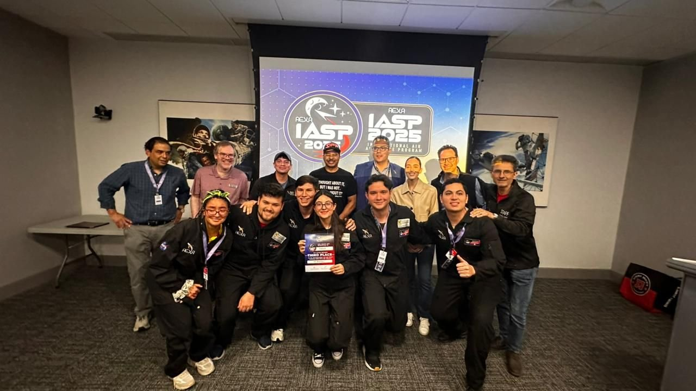
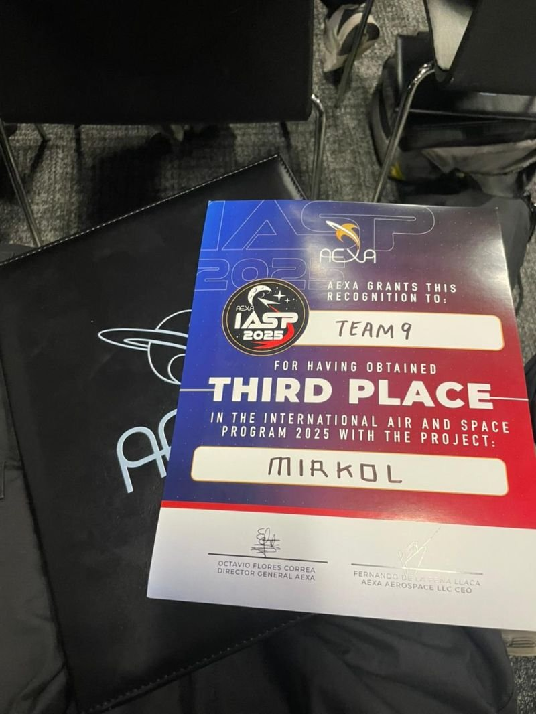
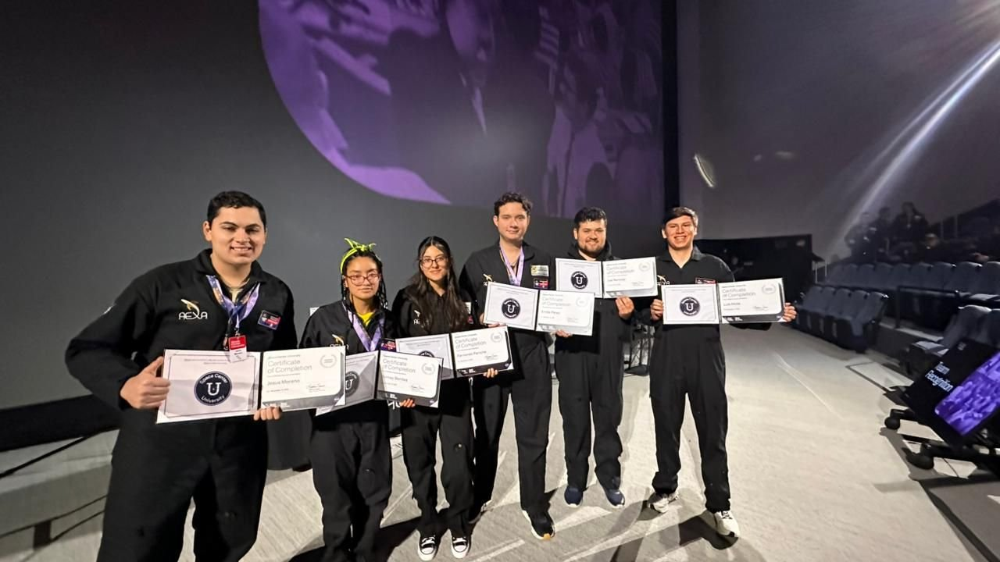
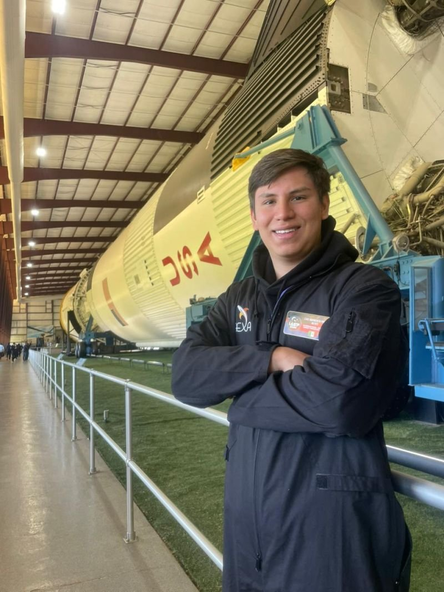
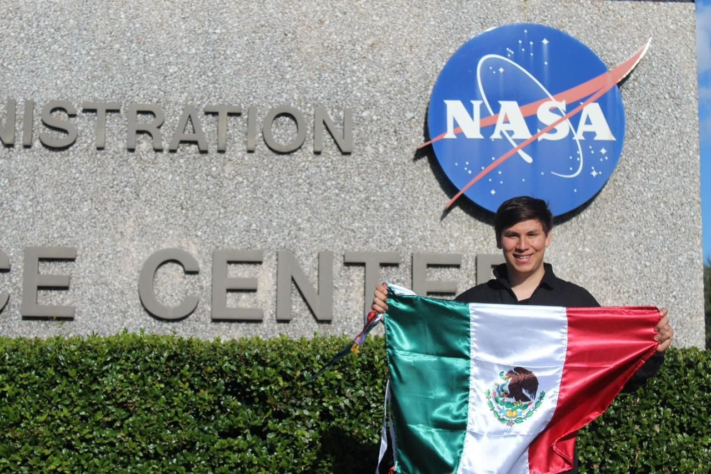
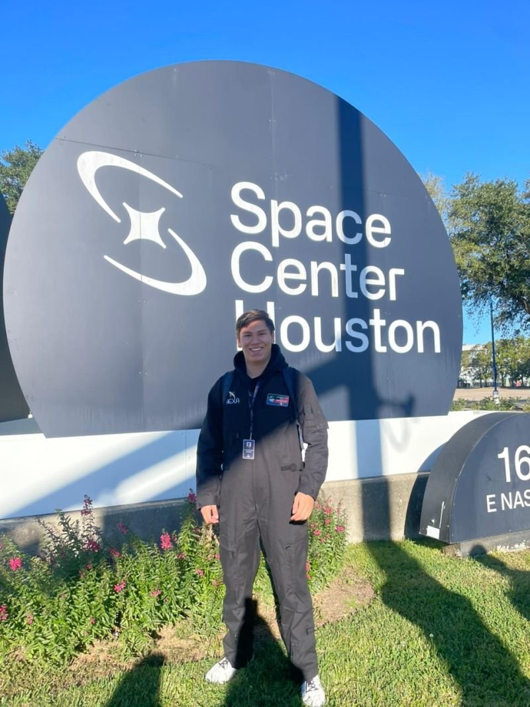
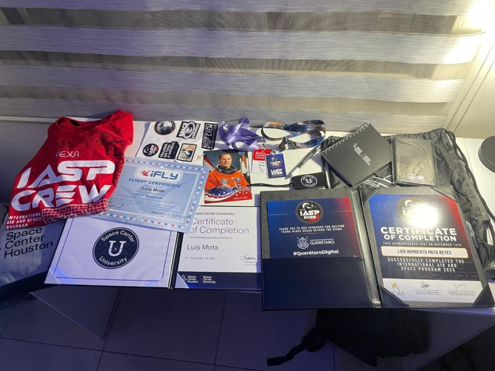

International Air and Space Program 2025
Programa educativo de una semana organizado por AEXA en colaboración con la NASA en Space Center Houston, en noviembre de 2025. Además del entrenamiento de astronauta, cada equipo desarrolla un proyecto de ingeniería para resolver un reto actual de la industria espacial.
A one-week educational program organized by AEXA in collaboration with NASA at Space Center Houston in November 2025. Alongside astronaut training, each team develops an engineering project that tackles a current challenge in the space industry.

El retoThe challenge
En una misión a Marte, la tripulación no puede depender de la Tierra para resolver emergencias: la comunicación tiene minutos de retraso. Nuestro equipo multidisciplinario se propuso darles a los astronautas un apoyo autónomo en la superficie.
On a Mars mission the crew can't rely on Earth to handle emergencies: communication is delayed by minutes. Our multidisciplinary team set out to give astronauts autonomous support on the surface.
Lo que hiceWhat I did
- Codiseñamos MIRKOL, un robot hexápodo para acompañar a los astronautas en misiones a Marte y moverse en terreno irregular.
- MIRKOL integra una IA que corre en servidores locales, sin depender de la Tierra, para dar conocimiento médico y técnico esencial en emergencias.
- Trabajamos como equipo desde el primer día hasta la presentación final ante ingenieros de la NASA y AEXA.
- Entrenamiento de astronauta y visitas al Centro de Control de la misión Apolo y a la maqueta de la Estación Espacial Internacional.
- Sesiones técnicas con astronautas e ingenieros de la NASA y AEXA sobre su experiencia y el futuro de la exploración espacial.
- Co-designed MIRKOL, a hexapod robot built to accompany astronauts on Mars missions and move across rough terrain.
- MIRKOL runs AI on local servers, independent from Earth, to provide essential medical and technical knowledge during emergencies.
- Worked as a team from day one through the final pitch to NASA and AEXA engineers.
- Completed astronaut training and visited the Apollo Mission Control Center and the International Space Station mockup.
- Attended technical sessions with NASA and AEXA astronauts and engineers on their careers and the future of space exploration.
ResultadosResults
- Tercer lugar del International Air and Space Program 2025, a un punto del primer lugar, cuyo premio era enviar el proyecto a la Estación Espacial Internacional.
- Certificado de finalización del IASP 2025 (AEXA) y de Space Center University (Space Center Houston).
- Certificado de vuelo en iFLY Houston como parte del entrenamiento.
- Third place in the International Air and Space Program 2025, one point away from first place, whose prize was launching the project to the International Space Station.
- Certificates of completion from IASP 2025 (AEXA) and Space Center University (Space Center Houston).
- iFLY Houston flight certificate as part of the training.
GaleríaGallery






Para ver más sobre este proyecto, ve a la sección de CAD: renders, descripciones y archivos descargables.To see more about this project, go to the CAD section: renders, descriptions and downloadable files.
Ir a la sección de CADGo to the CAD section